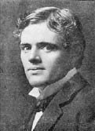

(1876 – 1916)

Döneminin en çok gezen, en çok roman yazan, en çok para kazanan, en çok "fikir hırsızlığıyla" suçlanan ve en çok tanınan yazarıydı Jack London. "Ateş Yakmak"tan "Demir Ökçe"ye, "Vahşetin Çağrısı"ndan "Martin Eden"a kadar, dünya edebiyatının unutulmaz yapıtlarının sahibidir.
Hayatı da romanları kadar maceralı geçen Amerikalı yazar Jack London (okunuşu: Cek Landın), 12 Ocak 1876 tarihinde San Francisco'da doğdu. Doğduğu ev, 1906 San Francisco depremi sırasında çıkan yangında tamamen yandı. Aynı yangında tüm resmi kayıtlar da yok olduğu için Jack London'ın tam adı hatta biyolojik babasının kim olduğu bile kesin bilinmemektedir. Annesi Flora Wellman, spiritüalist bir müzik öğretmeniydi. Jack'in babası olduğu düşünülen William Henry Chaney ise astrologdu. London, 1889 yılında Hickmott konserve fabrikasında çalışmaya başladı. Ağır çalışma koşullarından kurtulmak için sütannesi Virginia Prentiss'ten borç alarak French Frank adındaki bir istiridye korsanından Razzle-Dazzle adlı şalopayı satın aldı. Böylelikle o da bir istiridye korsanı oldu, ancak birkaç ay sonra yelkenlisi tamir edilemeyecek düzeyde zarar gördü. Bu olaydan sonra saf değiştirerek Kaliforniya Balık Devriyesi'nin bir üyesi oldu.
1893 yılında Japonya sahillerine gitmek üzere Sophia Sutherland adlı fok balıkçısı uskunaya girdi. Döndüğü zaman ülkesi 1893 Krizi'nin ve Oakland'daki işçi hareketlerinin etkisi altındaydı. Bir hintkeneviri fabrikasında ve bir elektrik santralinde ağır iş koşulları altında çalıştıktan sonra, gezgin yaşantısına başladı.
1894 yılında serserilik nedeniyle Buffalo'daki Erie County Cezaevi'nde otuz gün hapis yattı. Denizcilik deneyiminden sonra Oakland'a döndü ve Oakland Lisesi'ne kaydoldu. Burada Aegis isimli okul dergisine birkaç yazısıyla katkıda bulundu. Bu yazılardan biri olan ve yayımlanan ilk eseri olan Japon Kıyılarında Tayfun kendi denizcilik deneyimlerinin bir meyvesidir.
25 Temmuz 1897'de, London kayınbiraderi James Shepard ile Klondike Altın Avı'na katılmak üzere yola çıktı. İlk başarılı öykülerini de burada yazacak olan London'a Klondike dönemi iyi gelmedi. Klondike'taki diğer birçok kişi gibi o da beslenme yetersizliği yüzünden iskorbüt hastalığına yakalandı. Bu hastalık dişetlerinin şişmesine ve dört ön dişini kaybetmesine neden oldu. Aynı dönemde karın ve bacak kaslarındaki ağrılar da ona ıstırap veriyordu. "Dawson City'nin ermişi" lakaplı peder William Judge ona ve onun gibi çeşitli hastalıklarla boğuşan birçok insana barınacak yer, yemek ve ilaç temin etti. London'ın sağlığı bu sayede düzeldi ve bu Cizvit papazı tarafından belki de hayatı kurtarılmış oldu. Böylelikle London, Klondike'ın tüm güçlüklerine karşın hayatta kalmayı başardı. Bu çabası, onun en iyi eserlerinden sayılan Ateş Yakmak adlı öyküsüne esin kaynağı oldu.
1898'de Oakland'a döndüğünde ciddi olarak yazdıklarını yayınlatma çabasına girişti. Bu dönemi, Martin Eden adlı romanında akıllara kazınacak bir biçimde anlattı. Yayımlanan ilk öyküsü Yoldaki Adam'dı. Bu öyküsü için Overland Monthly ona yalnızca beş dolar teklif edince Jack London yazarlık kariyerini sonlandırmanın eşiğine geldi. Kara Kedi dergisi Bin Ölüm adlı öyküsünü kabul ederek bir öyküsü için aldığı ilk para olan 40 doları ödeyince kendi ifadesiyle, "gerçek anlamda ve edebi anlamda kurtuldu" ("literally and literarily I was saved").
Batarde ve Diable olarak iki farklı adla, başka başka dergilere sattığı bir kısa öyküsünde, Fransız asıllı zalim bir Kanadalı ile köpeği anlatılır. Köpek vahşileşir ve sonunda intikam için sahibini öldürür. London, köpeği kötülüğün simgesi olarak gösterdiği için yapılan eleştirilere karşı hayvanın davranışının asıl sebebinin adamın tutumu olduğunu dile getirmiş, Saturday Evening Post için yazdığı Vahşetin Çağrısı adlı öyküsünde bu görüşünü ayrıntılandırmıştır. Santa Clara vadisinde geçen bu öykü, Buck adındaki St.Bernard-çoban köpeği kırması olan bir köpek üzerine kuruludur.
Jack London, 7 Nisan 1900'de, Kurdun Oğlu'nun yayımlandığı gün Bess Maddern ile evlendi. Bess, birkaç yıldır arkadaş çevresinin bir parçası olmuştu. Evlilikleri iyi gitmeyince 24 Temmuz 1903'te Jack London, Bessie'ye ayrılmak istediğini söyledi ve evden taşındı. 1904 yılı boyunca boşanma şartlarını görüştüler ve 11 Kasım'da boşandılar. Maddern'den boşandıktan sonra London, 1905'te Charmian Kittredge ile ikinci evliliğini yaptı.
Aynı zamanda gazetecilik de yapan Jack London, 1904'te Japon-Rus Savaşı'nı, 1906 San Francisco Depremi'ni ve 1914 Meksika Devrimi'ni gazeteci olarak izledi. Bu arada 1905'te, California'da, Sonoma Dağı'nın Doğu yamacında bir çiftlik satın aldı. "Eşimin yanı sıra bu çiftlik gözüme dünyanın en güzel şeyi olarak görünüyor" diyen yazar, çiftliğin başarılı bir ticari girişim olmasını istedi. Yazarın 1910'dan sonraki edebi eserleri daha çok ticari amaçlıydı. Çiftliğe kazanç sağlama ihtiyacıyla yazılmışlardı. Tarihlere bakılırsa gerçekten de Jack London'ın tüm önemli yapıtları (Beyaz Diş, Ateş Yakmak, Vahşetin Çağrısı, Martin Eden, Demir Ökçe...) 1910 öncesi tarihlerde yazılmıştır.
1907-1909 arasında eşi Charmian'la birlikte Tahiti, Samos, Fiji, Salomon Adaları ve Avustralya'yı kapsayan bir geziye çıkan Jack London, Hawaii'yi Aralık 1915'te ziyaret etti. Hawaii'de bulunduğu sekiz aylık sürede Dük Kahanamoku, Prens Jonah Kūhiō Kalaniana'ole, Kraliçe Lil'uokalani ve daha pek çok kişiyle tanıştı. Temmuz 1916'da çiftliğine geri dönen London, böbrek yetmezliği şikayetine rağmen çalışmaya devam etti.
Zamanının en çok kazanan yazarı olan Jack London, kariyeri boyunca defalarca intihal (fikir hırsızlığı) ile suçlandı. En ciddi suçlama, Jack London'ın dünyaca ünlü Demir Ökçe romanının "Piskopos'un Gördüğü Hayalet" isimli 7. bölümü hakkında ortaya atılmıştır. Bu bölümün yazar Frank Harris'in 1901 yılında yayınlanan Londra Piskoposu ve Halk Ahlakı isimli ironik denemesinin birebir kopyası olduğu söylendi. Bu olaydan dolayı öfkelenen Harris, kitabın telif haklarından 1/60 oranında hisse talep etti. Jack London ise bu bölümün bir gazete kupürü olarak eline geçtiğini, yazıyı gerçek Londra Piskoposu'nun gerçek bir konuşması olduğunu zannederek kullandığını öne sürdü.
Jack London'ın ölüm sebebi çok tartışılmıştır. Pek çok eski kaynakta intihar ettiği anlatılmıştır. Ölüm raporunda belirtilen neden üremidir. 22 Kasım 1916'da, çiftliğinde bir uyku sundurmasında ölmüştür. Son dönemlerinde çok acı çektiği ve morfin aldığı biliniyordu, dolayısıyla kazayla ya da kasıtlı olarak aşırı doz alması da bir olasılıktır. Jack London, eşi Charmian'la birlikte California, Glen Ellen'daki "Jack London Eyalet Tarihi Parkı"na gömüldü. Çok sade olan mezarda sadece yosun tutmuş bir kaya parçası dikilidir.
Seçme Yapıtları: Ateş Yakmak (1902 – Adam Yayıncılık, 2002), Vahşetin Çağrısı (1903 – Cem Yayınevi, 2010), Deniz Kurdu (1904), Beyaz Diş (1906), Demir Ökçe (1908), Martin Eden (1909 – Oda Yayınları, 1999), Yanan Günışığı (1910), Güneş'in Oğlu (1912), Ay Vadisi (1913), John Barleycorn (Alkollü Anılar – 1913), Kızıl Veba (1915), Yıldız Serüvencisi (1915)